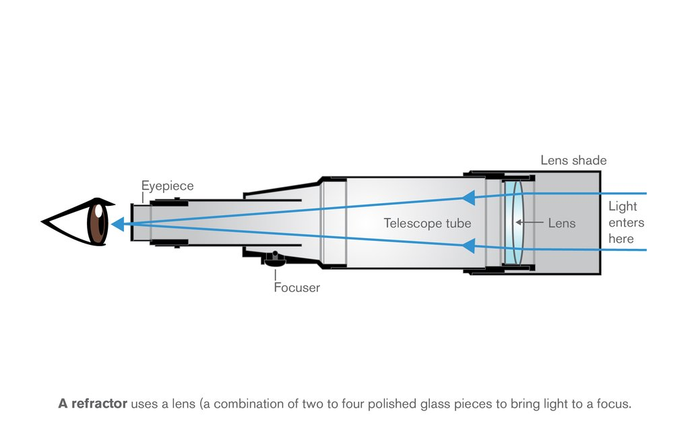
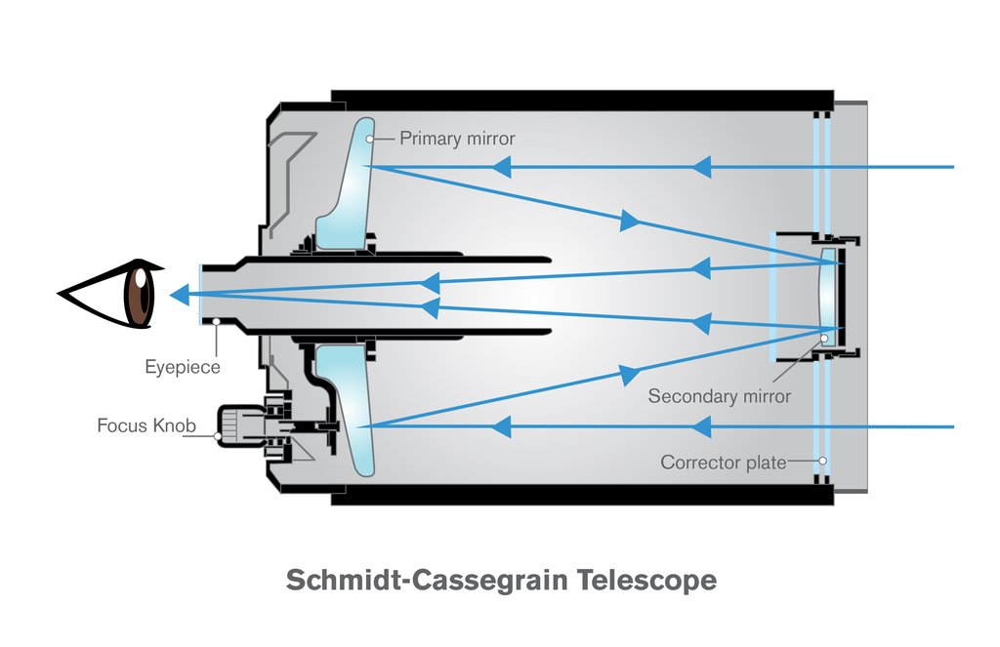
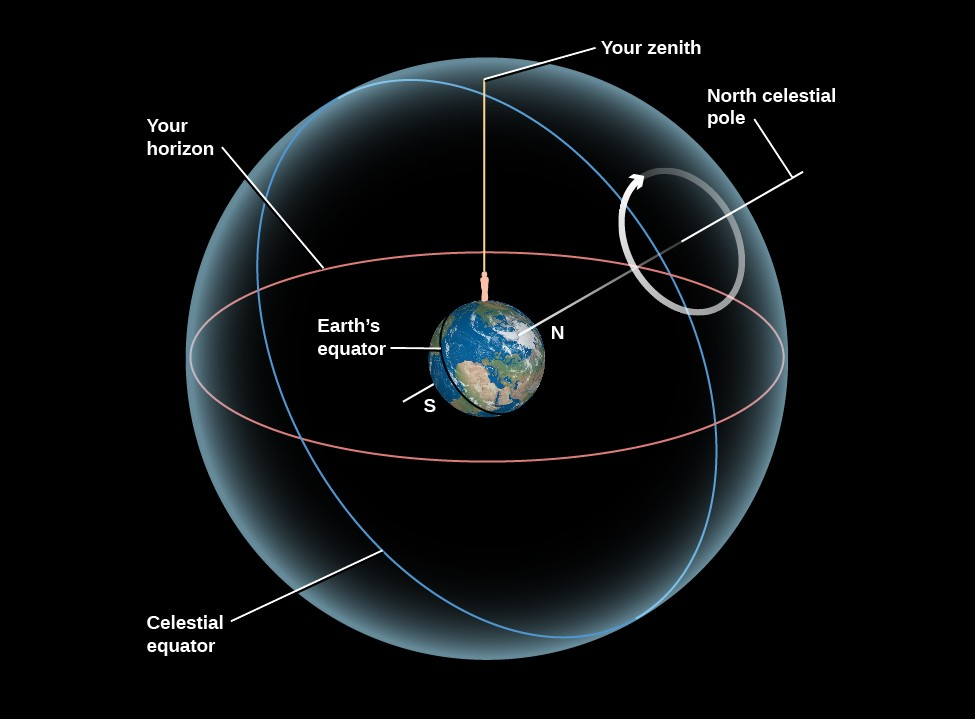
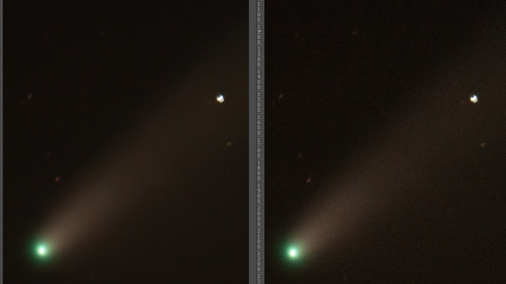

Welcome to INTERSTELLAR, a website I created. From pictures, to code, everything here was created and produced by me, Victor Ibarra-Martinez.
A brief introduction on me: I'm an avid astronomer, and an amateur at that. If that’s not enough for you, check out the ‘About Me’ tab to learn
more! This website was designed to share my own knowledge of space among other astronomers, near or far! Although space is one word, there are
so many other aspects that contribute to making space what it is. While there are a lot of things to learn about space, im hoping this website
can be used as a guide for anyone who’s interested in learning more about space. While being one of the most mysterious wonders of the universe
since the beginning of time, its also beautiful! This video below is a brief summary on what astronomy really is. See you on the other side!
What is astronomy?
Definition of astronomy (taken from space.com): Astronomy is the study
of the sun, moon, stars, planets, comets, gas, galaxies, dust and
other non-Earthly bodies and phenomena.
I get a lot of people asking me about astrology, which I don't know as much about. They're two different studies, but one is science-based
and the other is intuition-based. Astronomy deals with the science aspect of outer-space
phenomena, like using the scientific method to figure out the orbital period of a planet,
and using numerical data to show how fast a comet is moving. This has to do with numbers! Astrology involves the
alignments of celestial objects (i.e. Earth, Moon, Sun, planets) among the backdrop of stars
and how those alignments affect our personalities, fortune, and other things.
They used to be closely associated for long time, until somewhere around 1100 to
the enlightenment era, when people began making scientific developments. Even though astrology isn't a science, it is still really interesting to
learn and connect things to your own life!
I love astronomy because it is jam-packed with so many different topics and ideas that anyone can get their hands on. I notice when
I tell my friends about what I know they seem to be impressed and excited to learn about it, so I think it's something for everyone!
How can I start exploring the stars?
Starting any kind of new hobby can be exciting yet intimidating. The best way to get started on your journey of becoming familiar with
what’s in our universe is by going out on a clear, starry night, and look up! Stargazing, an immersive way to understand the stars, is the
perfect way to get into astronomy! Doing this will spark an interest in astronomy, even if you didn’t before! You may notice there are so many
stars in the sky and navigating where everything is seems to be challenging, but with the right tools, it can be easy! Lucky for you, many
astronomers from hundreds of years ago created maps of the stars, for both Northern AND Southern hemisphere observers! (the stars differ in both
hemispheres, with the exception of some stars showing up on both sides of the Earth) From taking a notebook to write about what you observe, to
searching the web for a star map to print out to take with you, it seems effortless. The best part? Both of these are FREE! To get you started,
here is a website where you can print your very own star map! SkyMaps.com
Star maps have even made it to the technology world! You can download the Stellarium
software:
(Android,
Apple,
PC/Mac/Linux) that serves the same functions as paper star maps,
but they are much more interactive after a quick calibration of the night sky. Personally, I recommend
this over using a printed star map, plus you will save paper!
Using these helpful tools, you can familiarize yourself with ancient star patterns known as
constellations, stars, planets, the lunar cycle, the seasons, comets, asteroids, the sun, galaxies, and much more.
There are a lot of topics to study that are astronomy-based, and the more you learn about one topic,
the more you realize that you don't understand. That is the beauty of astronomy, and it
sparks a curiosity in those who want to keep learning.
What topic would be fit for me?
After spending time looking into outer space, what did you find interesting? Did anything in particular
stick out more than other things? This is where the notes you wrote might come in handy, as
they can help provide an insight into what you like to observe most. For me personally, it was the nebulae.
They stick out to me because they are colorful monstrosities, the death and birth of stars.
They are a part of deep space, which is the part of space beyond our solar system.
I find it interesting because there is so much to be explored, and so much to be found. I love that aspect
because I get to observe with my own telescope and imagine what's out there.
Your own observations may lead you to like the planets, and if we can find planets
similar to Earth in deep space, or you may enjoy just looking up at the stars and noticing every
few hours how they move, in that case you may find interest in the movements of celestial objects.
There is a lot to figure out, and this is the most important part of your journey in the field of astronomy.
You'll find some different kinds of astronomy studies in the navy blue section below.
Different Kinds of Astronomy
Astronomy is broken down into a number of subfields, allowing scientists
to specialize in particular objects and phenomena:
Planetary astronomers (also called planetary scientists) focus on the
growth, evolution, and death of planets. While most study the worlds
inside the solar system, some use the growing body of evidence about
planets around other stars to hypothesize what they might be like.
According to the University College London, planetary science "is a
cross-discipline field including aspects of astronomy, atmospheric
science, geology, space physics, biology and chemistry."
Stellar astronomers turn their eyes to the stars, including the black
holes, nebulae, white dwarfs and supernova that survive stellar deaths.
The University of California, Los Angeles, says, "The focus of stellar
astronomy is on the physical and chemical processes that occur in
the universe."
Solar astronomers spend their time analyzing a single star — our sun.
According to NASA, "The quantity and quality of light from the sun
varies on time scales from milli-seconds to billions of years."
Understanding those changes can help scientists recognize how Earth
is affected. The sun also helps us to understand how other stars work,
as it is the only star close enough to reveal details about its
surface.
Galactic astronomers study our galaxy, the Milky Way, while
extragalactic astronomers peer outside of it to determine how these
collections of stars form, change, and die. The University of
Wisconsin-Madison says, "Establishing patterns in the distribution,
composition, and physical conditions of stars and gas traces the history
of our evolving home galaxy."
Astrometry, the most ancient branch of astronomy, is the measure of the
sun, moon and planets. The precise calculations of these motions allows
astronomers in other fields to model the birth and evolution of planets
and stars, and to predict events such as eclipses meteor showers, and the
appearance of comets. According to the Planetary Society, "Astrometry is
the oldest method used to detect extrasolar planets," though it remains
a difficult process.
Cosmologists focus on the universe in its entirety, from its violent birth
in the Big Bang to its present evolution, all the way to its eventual death.
Astronomy is often (not always) about very concrete, observable things,
whereas cosmology typically involves large-scale properties of the universe
and esoteric, invisible and sometimes purely theoretical things like string
theory, dark matter and dark energy, and the notion of multiple universes.
These are just a few of the many studies, but they're a good place to get started.
For me, the best fit would be stellar astronomy because I like to observe the stars,
nebulae, and would absolutely love to observe the movement of stars around a black hole.
It may take some time to figure out what you like, but it is worth the wait!
There is no exact time you have to figure it out, but learning more about outer space
will better prepare you to learn whatever you want.
Now that you have a little bit of knowledge (and hopefully practice) from stargazing,
everything will feel more natural when observing. You'll start to memorize constellations
and stars, the movement of the planets year-round, and what things are visible
during different months of the year.
Solar System
Optical Instruments
Astronomy for long has marveled us puny humans. How is it that we know so much
(yet so little) about it? Optical devices such as telescopes have aided the exploration
of space with its magnifying capability by making far away objects appear closer.
Optical instruments include binoculars, telescopes, spectrometers, and more, and they allow us
to dive into the stars in greater detail. They are essential to the exploration of space because of
their light gathering capabilities able to resolve even the faintest of galaxies, all with the
intent to give us a deeper understanding of space.
Think about them like this: your eyes act as lenses (like a telescope lens). The only problem with your eyes
is that their aperture (the diameter of the lens) is much too small to gather enough light to see deep space objects
such as nebulae, galaxies, and others. The focal length of your eyes (the distance from the lens of your eye to
the point of focus) is also small, which is why we have wide field vision. Both these things play a big role
in telescopes and binoculars. The bigger the aperture, the more light gathering capabilities of a telescope.
The higher the focal length, the more close up image you can achieve with a telescope.
If you're looking to get one of these instruments, I recommend getting binoculars or
a cheap refractor/reflector telescope to start off. These instruments give motivation to go
out every clear night to magnify the stars, and they are a great learning experience.
Below is a photo of my reflector telescope that helps me see the moon, planets, and stars closer up,
and next to it a photo of binoculars.
Reflector Telescope
Binoculars
Binoculars
Binoculars are a small optical device that can be used in different ways, not just for our night sky.
This tool acts like a telescope, but it can be used with both eyes. It brings the field of view closer to you,
and it makes faint things appear a bit brighter. That is because the larger aperture brings in more light, and
the focal length makes things appear closer. They are a very portable tool that require little setup time with a tripod
and zero setup time without a tripod. Many people take binoculars with them on camping trips because they're great
both in the daytime and nighttime.
I will not list pros or cons of binoculars because they are not comparable to
telescopes. They are in their own category, they have their specific uses, and they are typically not expensive.
Telescopes
Telescopes are the other optical devices used by astronomers. Telescopes typically have an optical tube assembly (OTA)
that contains an objective mirror and an eyepiece, among other things. There are many kinds of telescopes on the market,
and I will quickly break down each one in this article.
Refractor Telescope

Refractor Diagram
The refractor telescope, shown above, is a kind of telescope that lets light pass through an objective lens, which in turn bends an
object's rays of light into focus. It then comes out the other end, called the eyepiece, and projects the image of whatever object the
telescope is pointed at. These telescopes are typically smaller and more compact than the other kinds, making them easier to
transport.
Pros and cons of the refractor:
Pros
Typically lightweight, more compact and easy to carry around or put into a travel case
Does not require a large mount to operate, and easy to balance on a mount.
Easy to point the scope at an object and find it quickly
From a dark sky site, they provide excellent views of bright nebulae and stars
Great for astrophotography, given the right one is bought for your liking.
Does not require collimation (fine tuning of the lens to provide sharp views)
Cons
Suffers from chromatic aberration, an optical effect which makes objects appear hazy and purple, due to
the red, green, and blue wavelengths not aligning at the pupil. Affects single lens refractors the most, although
there are Apochromatic refractors which use multiple lenses to counteract this problem.
Higher quality means much higher cost, so an apochromatic is almost double or triple the price of a standard
refractor.
Reflector Telescope
Reflector Diagram
The reflector telescope is different from the refractor because instead of using lenses to bend rays of light to a focus, it uses a set of mirrors
to simply reflect the light coming through it. There are some advantages and disadvantages to using a reflector over a refractor. The biggest benefit
is that a reflector doesn't suffer as much from chromatic aberration (red, green, and blue wavelengths focusing at different points). This is because it just
reflects light, not bend it. A disadvantage is that they can be much more bulky and heavy as a result of using a large mirror and larger optical tube.
They require periodic collimation to ensure a sharp image. Collimation is the straightening of the primary mirror to have it point dead center.
Pros and cons of the reflector:
Pros
Low chromatic aberration, so color and image are clearer and sharper than a cheap refractor.
Cheaper than refractors.
Suitable for crisp views of planets, the moon, and bright nebulae
Considered light buckets, meaning a lot of light can be collected with their larger apertures
Cons
The larger the scope, the heavier and bulkier they get, so a sturdier mount is needed.
Occasional collimation is required to keep the optics sharp
A bit more difficult to use for astrophotography, considering balancing, heaviness, etc.
Compound/Catadioptric Telescope

The compound telescope is like a reflector, but the end image is produced at the back of the telescope instead of on the side. It has a primary and
secondary mirror, just like a reflector. It requires collimation as well. Due to there being a series of mirrors, the light bouncing around travels a
much longer distance through the telescope tube despite the tube being shorter than a newtonian reflector. Therefore, compound telescopes typically have
focal lengths longer than what they seem.
Pros and cons of compound telescopes:
Pros
Low chromatic aberration
Set of mirrors allows long focal lengths in a compact tube
Great for views of the planets and moons
Compact design allows for versatile usage of mounts and other equipment
Cons
Longer focal length means it will be hard to locate objects without a guide scope
Higher aperture value (aka a slower f/ ratio) means the image appears darker, and it will take longer to collect light from celestial objects.
The price quickly goes up as the aperture increases even slightly
Telescopes are instrumental to our understanding of the stars. For me, this topic induces joy not only because it's fascinating,
but also because looking through telescopes is one of the best (subjective) experiences in the world! It definitely should be
a bucket list item for a lot of people, because it's pretty life changing. The way I like to show my passion about the astros
is by being out on a dark, moonless night, taking pictures one by one while I sit in the car with my lovely girlfriend
playing video games :) (i love you Danna <3.) >
Astrophotography
Welcome to the astrophotography part of this website! A warm welcome to all those who haven't yet started this hobby,
or who are just starting. To those who have been doing this for at least a year or two, a
big welcome to you who has probably spent more money than they needed to on this hobby (me included)!
I'll be happy to share some of the experience I've picked up over the years, (Almost 3 years and counting!)
so that you can also learn a bit and share those photos that you've always wanted to take of space!
In this guide I will keep it simple. Simple is better because it's not beneficial to spend
a lot of money on expensive gear to start off, since there is a sharp learning curve that would
be difficult to overcome. I'll start with some key concepts, and then move on to required gear.
It's important to understand the concepts of astrophotography. If not well understood,
it'll be confusing to know where to start. Confusion is the last thing we want, so it's best if we
clear that up now!
Exposure Time
Astrophotography is the photography of space (duh), and it is much different than portrait photography
or landscape photography. The reason is because space and its beautiful scenery is only available to us
at night (minus the solar system and some bright stars, which are visible at dusk.), and it is very dark.
If you were to point your camera at a nebula in the sky, you wouldn't see it through the viewfinder.
Instead, all you see is pitch black, or maybe a few bright stars.
This is where the concept of long exposure photography comes in. In order to capture light from
objects we can't even see with our naked eyes, then we have to set up cameras to take photos for a long
time. Simply put, we are giving the camera sensor more time to take in light, therefore allowing
it to try and "see" the space object we are attempting to image. The only things that don't
need long exposures are solar system objects, like planets, the moon, and sun (with an appropriate solar filter!
never point your telescope directly at the sun without a proper solar filter!).
To continue on the topic of long exposures, they allow us to capture deep stuff objects
like nebulae, galaxies, the milky way, and more! To the left is a photo that I took of the Milky Way
using 2 minute exposures, possible with an intervalometer. With my eyes, all I could see were faint patches
of dust, but with the camera a new world was unlocked for me, and it felt gratifying!
Tracking the stars
To take long exposures, we need the object to stay centered in the camera for minutes at a time.
This is a problem because of one thing, the earth is rotating! If we take photos for too long, then the
object we are imaging will begin to start trailing behind, leaving with it streaks of stars and a lot of smudginess.
How can we counteract the earth's rotation? We first should try to understand how the earth rotates, what is
the axis of rotation and how do objects in space move relative to us?

This is a simple diagram of the earth's rotation on its axis (taken from Lumen Learning on Astronomy)
There is a little person on the planet to represent us, and how the earth rotates with us on it.
We rotate around the north celestial pole (NCP) at a certain rate called the sidereal rate. To take
longer exposures of an object, a telescope mount (to be talked about later) would have to be aligned
with the NCP, or SCP if you live in the southern hemisphere. With the mount aligned to the pole, it can
go the opposite direction of the earth's rotation, effectively staying stationary on one object the whole night.
This may get very confusing, so follow up in the next video about star-tracking!
Thanks AlphaPhoenix!
Light Gathering
Now that we know what long exposures do, and what star tracking is, what's next?
The next important thing to know is camera settings and specs. How can we alter
the camera settings to get the best result possible from our equipment?
First, let's go over F/ratios (said as f ratios). An f/ratio is the speed of a lens
that you use with your camera. The smaller the number that follows the f/, the "faster"
that lens captures light. The bigger the number, the "slower" the lens captures light.
Basically, the f/ratio can be calculated by taking the focal length divided by the
aperture of the lens. The telescope I currently have is f/5, because its focal length
is 650mm, and its aperture is 130mm. 650/130 = 5. I have an f/ratio that is in between
fast and slow, with fast lenses being mostly f/1-f/4, middle being f/5-f/7, and slow
being f/8-f/15 or more.
A lens with an f/ratio of f/2 is a fast lens, meaning it brings in light
quickly. With this kind of lens, we can use shorter exposures than we would with an f/4
lens for example. This means there is more leniency on the mount we could use, giving
us a wider selection of options with mounts and tripods. A slower lens like an f/5
telephoto lense would require a lot more time to capture the same amount of detail
due to it bringing in less light. This would equate to buying better tracking gear,
and having better conditions to image in (i.e. less wind, stable ground, etc).
ISO values
Talking about light gathering capability, another aspect of it would be ISO values.
ISO can be thought of as a "speed" of the camera sensor bringing in light. The higher
the value for the ISO, the more light will be brought in by the sensor and more
immediately. It is not like exposure time where you have to have a steady tripod for
the camera and let it take a photo for x amount of seconds. By changing the ISO value
on a DSLR or dedicated astronomy camera, you will instantly see more or less light no
matter how long of an exposure is taken. Be careful though, because raising the ISO value
introduces more sensor noise! Sensor noise is a type of grain that can invade your pictures,
and this can be tricky to remove!

Exposure time and noise vs. ISO value and noise
The above photo can be used to compare longer exposures vs ISO and their effect on
noise. In the photo on the left I used an exposure time of 60
seconds at an ISO value of 800. In the photo on the right I used an exposure time of
30 seconds at ISO 1600. You can see on the left photo that there is less graininess,
or noise. On the right, there is a lot more grain and it makes the photo appear rough.